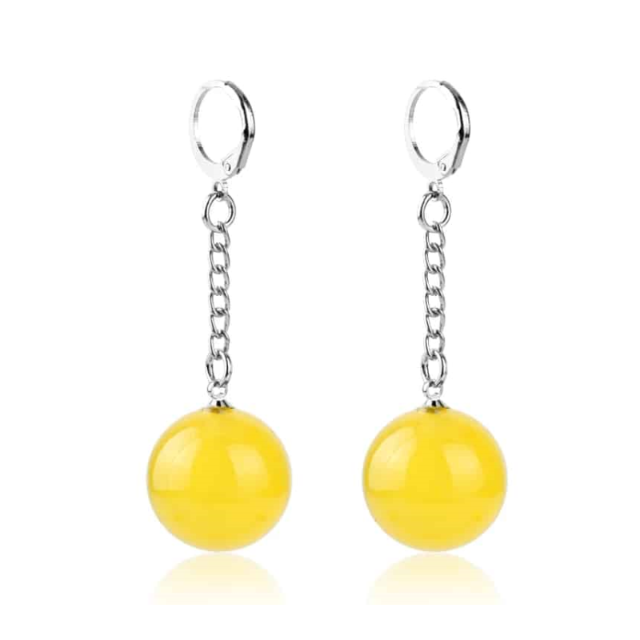
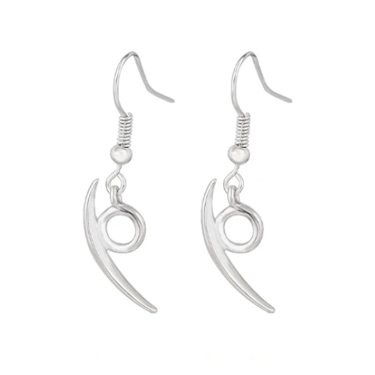

Aros Hisoka - Hunter X Hunter
Si bien el personaje de HxH usaba otros aretes, estos son referentes a él,
dando relevancia al uso de sus cartas y marcas en la cara.
$7.000
Aros de Fusión (Potara) - Dragon Ball Z
Los Aros de Fusión, conocidos como Potara, son pendientes especiales que, cuando dos individuos los usan y realizan una danza,
se fusionan en uno solo con habilidades y personalidades combinadas, siendo permanente para la mayoría, excepto para los Kaioshins.
$7.900
Aros Orochimaru
Aros utilizados por el más oscuro de los tres legendarios Sanin, y ex miembro de Akatsuki, el inmortal Orochimaru.
Se desconoce el significado de los aretes, pero no dejan de simbolizar el sombrío estilo del gran amo de las serpientes.
$9.990